The Generous Galley Eats
Here's how to prepare fish chowder, quahog chowder, stuffed quahogs, filets and clambake.
By Jan Adkins
November/December 1972
BOY WONDER
Here is a nice, fat haddock. Hold the beggar by the tail and scrape forward, with the knifeblade at a right angle to the surface. The scales should come off easily.
Slit the belly from gills to vent with a shallow cut that will open the cavity but not cut the organs. The viscera should come out in a simple whole. Wash out the cavity with special attention around the backbone.
Cut off the head, just behind the fin. Cut off the tail. Cut away the fins and spines with a v-cut. For fish-cleaning, you'd better have a knife as sharp as a samurai's ceremonial sword.
Cut away the filets from the top by letting the knife rum down the backbone, lifting the filet away. Cut carefully around the spike and then along the ribs.
To skin, start at the tail, carefully separating about an inch of skin from flesh. Angle the blade slightly down, hold the skin (on underside), near the blade and use a sawing motion to run along the skin.
Quahog chowder is made very much like fish chowder: open A quart of quahogs and reserve the juices/ mince the clams fine/parboil lots of potatoes for 5 minutes/dice and try out a cube of salt pork / saute a couple of sliced onions in the fat/pour onions and fat in a stewpot and dump a layer of half the potatoes over all/sprinkle on the minced clams, salt, pepper and a a sifting of flour/toss the rest of the potatoes on top, and sprinkle salt, pepper, and flour again/add 2 1/2 cups of boiling water and cook 10 minutes/add a chunk of butter and four cups of scalded milk/ the last addition is the clam juice and a cup of water, which you've heated to boiling, strained, and thickened by the addtion of a tablespoon each of butter and flour heated together to make a paste called a roux.
Stuffed quahogs use up the bigger, tougher clams in a delicious way. Its a wing job, and your nose will tell you what to heave together and pack into the shells is with the clam meat you've run through the fine grinder: breading, of course, sauteed onion and celery, some corn meal or cracker crumbs, a breath of garlic, a drop or two of Tobasco, herb, spices, whatever volunteers. Make the stuffing moist, claw half-shells together two by two, bake for 20 minutes or thereabouts.
A delicate operation requiring a tympanist's timing and a a sea-captain's decision. Two methods: dry the filets on towels and saute' in sizzling butter,; both sides, until sweet brown; dip in soupy milk/flour batter and cover with corn meal, fry in really hot vegetable oil (which can take heat without burning). How long? Not even your grandma can tell you.
A fine, festive way to chow down a crowd. Start in the morning when the tide is down and gather rockweed, the seaweed with nodules. For this crowd, a small clambake of say lo, bring up from the beach 2 or 3 burlap bagsful and fifteen round, dry, granite rocks about the size of big cantalope. If you dug your clams, about 8 quarts, soak them in baskets in a cranny or tide pool-if they're bought, have the fishmonger soak them beforehand. Build a mother of a fire and have enough wood to keep it going more than 2 hours. Perch the rocks in the fire so they can absorb all the heat possible. While the rocks are heating, get the food and the flats ready :The flats are 2 3' x 3 ' squares of 1" x 4" stock, covered across the with wire mesh. Put the clams in one flat, and in the other arrange -> 10 corn ears husked to the penultimate leaves/10 medium white potatoes/5 halved sweet potatoes/10 onions/2 down link sausage tin cheesecloth/2 dozen frankforts in cheesecloth/ 10 squares of hake, haddock, cod, bass, or bluefish filet in small brown bags wrapped in butcher paper/a cheesecloth bag of brown bread/later, a pot of melted butter. When the rocks are white hot; flip them into a shallow depression with pitchforks. Throw an even layer of rockweed about 3" , over the rocks and place the flats on it; the clams on top is let the juices drip down on everything else. Cover the whole steaming pile with old canvas and wet it down to close the pores. Slip the brown bread bag under the top canvas layer. Wait 1 1/2 - 1 3/4 hours and test a clam. If its done, bring out the clams and leave the rest to cook while you glutton the bivalves. Beer. A gorge show.
|
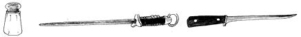 Try out the pork dice (cook out the oil). Remove the cracklings with a slotted spoon and slide in those sliced onions. Saute them 5 minutes. |
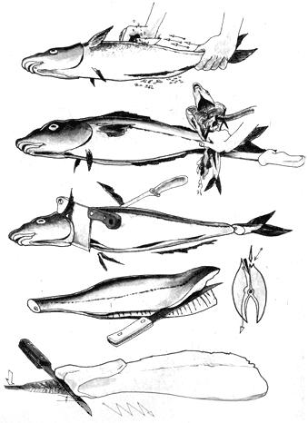 parboil the spuds for 5 minutes. |
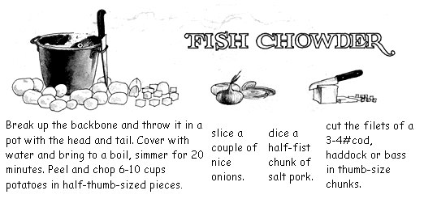 scald four cups of Milk. (heat slowly until bubbles appear around the edge- prevents curdling later). |
|
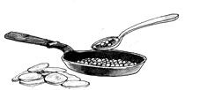 In a large pot put the pork oil and and onions, the potatoes, a 2 hot cups of liquor from the fish bones?cook 5 minutes. |
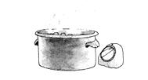 add the rest of the fish liquor, the fish chunks, and meat picked from fish bones?cook 10 minutes. |
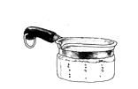 add the milk, a tablespoondful of salt, several grinds of pepper, and a healthy chunk of of butter?serve. |
|
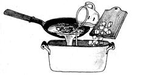 Chowder is traditionally eaten with common crackers or pilot bread crumbled into it to the consistency of a muskeg swamp. Mighty good. |
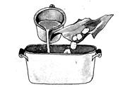 |
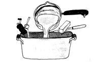 |
|
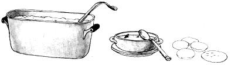 |
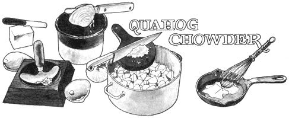 |
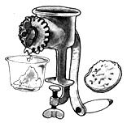 |
|
|
 |
|
|
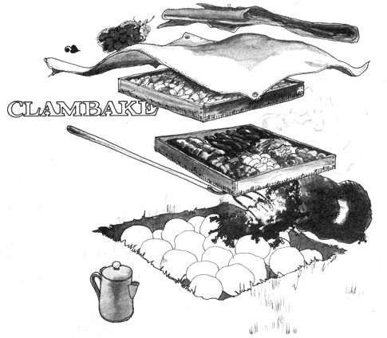 |
|
|